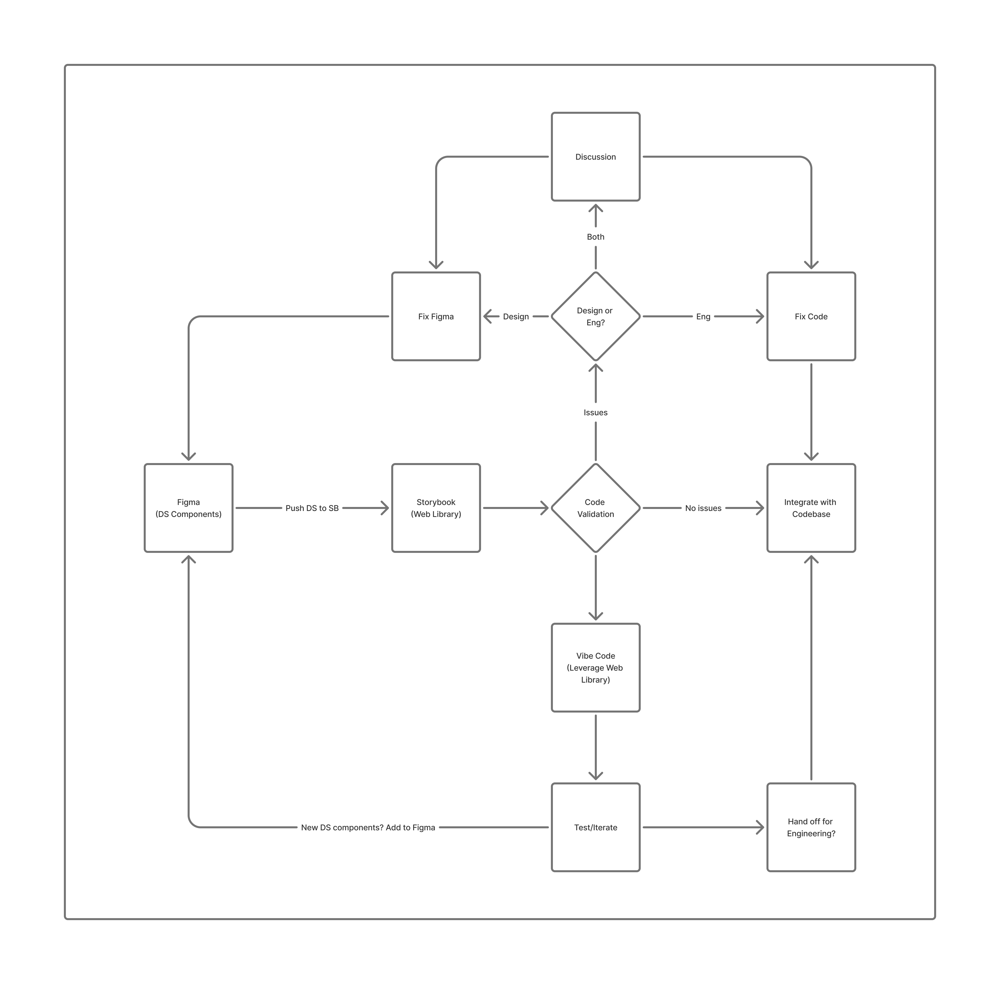

Keeping our Figma design system and coded component library in sync, with an AI-assisted pipeline that unlocks faster, higher-fidelity feature delivery.
We have a strong Figma DS and coded components, but they aren't connected. Every new feature means manual translation, and manual means drift, inconsistency, and slower delivery.
Developers re-implement Figma components from scratch. Every time. Design intent gets lost in translation: spacing, tokens, states.
Figma updates don't propagate to code. Code fixes don't propagate to Figma. Over time, the two diverge, and nobody notices until it's painful.
AI-assisted development ("vibe coding") can't leverage the DS if it doesn't exist in code. We're leaving speed on the table.
Figma stays the source of truth. Tokens and component specs flow automatically to code. Fixes flow in both directions.

Components, variants, and design tokens as Variables
Claude reads Figma via MCP, generates/updates coded components with DS context
Living component docs. Every Figma component has a coded, testable counterpart
AI agents and devs build features by composing DS components. Fast, consistent, on-brand
The tools have caught up. Things that required custom scripts or manual work now have native, supported paths.
Design tokens (colors, spacing, typography) can be exported directly from Figma as a standard format. No plugins or custom extraction scripts needed.
A Figma component can be formally mapped to its coded counterpart. Everyone (designers, developers, and AI) knows exactly what maps to what.
An AI agent can pull tokens, specs, and component mappings straight from Figma and generate code using the actual DS components, not approximations.
A Storybook component built from Figma can be checked against the existing codebase, framework constraints, and integration requirements, before it ever ships.
Start small, prove the loop, then scale. Designed to minimize engineering lift while proving the pipeline end-to-end.
Extract tokens from the Linus Figma DS. Build coded counterparts in Storybook (Button, Toast, Input, Card). Validate that tokens match and variants are covered.
Compose a real page (cards, text, buttons) entirely from synced DS components, AI-assisted. Measure time to build, design fidelity, and token accuracy vs. current workflow.
Review results with Design + Eng. If the loop works: expand component coverage, validate against codebase requirements, and formalize the sync cadence.